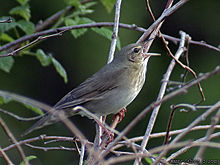
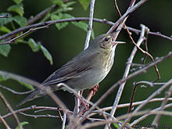

| River Warbler | |
|---|---|
|  | |
| Conservation status | |
| Binomial name | |
| Locustella fluviatilis (Wolf, 1810) |
| River Warbler | |
|---|---|
|  | |
| Conservation status | |
| Binomial name | |
| Locustella fluviatilis (Wolf, 1810) |
The River Warbler, Locustella fluviatilis, is an Old World warbler in the grass warbler genus Locustella. It breeds in east and central Europe into western Asia. It is migratory, wintering in east Africa.
This small passerine bird is a species found in dense deciduous vegetation close to water in bogs or near a river. 5-7 eggs are laid in a nest in a tussock or on the ground. This species is a rare vagrant to western Europe. In Britain, a small number of males have set up territories in spring, including a bird in Greater Manchester in 1995.[2]
This is a largish warbler. The adult has an unstreaked grey-brown back, whitish grey underparts, and a darker undertail, which has white feather tips giving a contrasting pattern. The sexes are identical, as with most warblers, but young birds are yellower below. Like most warblers, it is insectivorous.
Some birds can show reduced dark markings on the undertail-coverts (caused by more extensive than usual white tips) and thus be closer in appearance to Savi's Warbler than typical birds; however they typically still have a streaked breast and more olive upperparts coloration.[3]
This is a skulky species which is very difficult to see except sometimes when singing. It creeps through grass and low foliage.
The song is a monotonous mechanical insect-like reeling, often given at dusk. It is similar to the song of a Grasshopper Warbler, but has more of a sewing machine quality, and may be produced for long periods.

{kind=link}